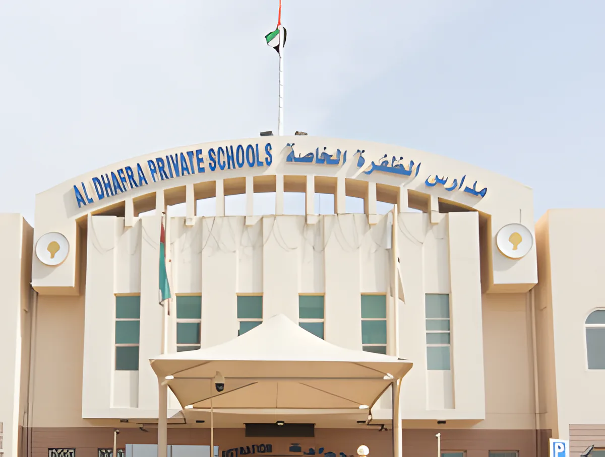
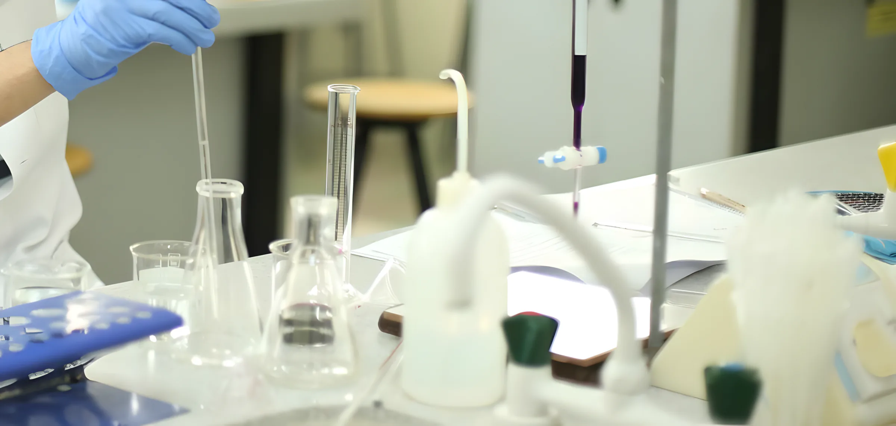
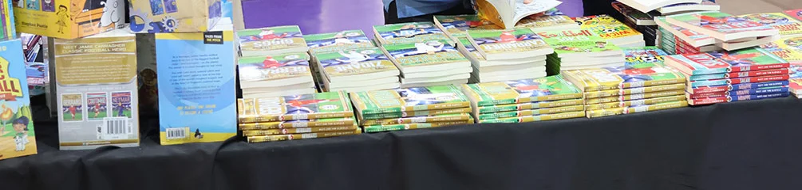

مدرسة بمنهج بريطاني وأمريكي في قلب العين، من KG1 إلى الصف الثاني عشر. مدرسة عائلية منذ عام 1989. Al Dhafra Private Schools, Al Ain
التسجيل مفتوح للعام الدراسي 2026–2027 · من KG1 إلى الصف 12، المساران الأمريكي والبريطاني
مدارس الظفرة الخاصة – العين: الظفرة
أيادٍ مرفوعة في الصف. يدرس عندنا 2,797 طالبًا وطالبة من 39 جنسية.
عن المدرسة
نحن مدرسة عائلية في قلب العين. يبدأ أبناؤنا معنا من KG1 ويدرسون المنهج الإنجليزي الوطني حتى نهاية الصف الثامن، وفي الصف التاسع يختار كل طالب المنهج البريطاني أو الأمريكي حتى الصف الثاني عشر.

من KG1 إلى الصف 12 في مدرسة واحدة
أربع مراحل في حرم واحد. المنهج الإنجليزي الوطني من الروضة حتى الصف الثامن، ومعه مواد منهج وزارة التربية والتعليم. بعدها يتفرّع الطريق إلى مسارين.
الروضة
KG1 وKG2، بداية المشوار.
الابتدائية
من الصف الأول إلى الخامس.
المتوسطة
من السادس إلى الثامن، آخر السنوات قبل الاختيار.
الثانوية: اختر مسارك
الصف التاسع
طريقان لإكمال المدرسة
المساران يستمران حتى الصف الثاني عشر في نفس المبنى، وتختار الأسرة المسار قبل الصف التاسع.
البريطانياستمرار المنهج الإنجليزي الوطني
- كامبريدج الدولية (CIE)IGCSE, AS, A Level
- النتائجتُستلم نتائج كامبريدج من المدرسة، الصفوف 10–12
- المعادلةمعادلة شهادات المنهج البريطاني
الأمريكيمعايير Common Core وNGSS وAP
- مواد APالتفاضل والتكامل AB، الأحياء، الكيمياء، الفيزياء
- مادة اختياريةAP Computer Science A (Java)
- الاختبارات الدوليةSAT, ACT, PSAT 10, AP
مدرستنا مركز معتمد لبعض الاختبارات الأمريكية، ونعقد كل الاختبارات الخارجية داخل المدرسة ما عدا EmSAT. كما تُجري المدرسة اختبارات MAP وGL لقياس التقدّم.
السنة التي افتتحنا فيها في العين. نفس المدرسة العائلية، واليوم فيها الروضة والابتدائية والمتوسطة والثانوية.
جنسية بين طلابنا البالغ عددهم 2,797، من KG1 إلى الصف 12.
معلمًا ومعلمة، ومعهم فريق القيادة العليا وفريق القيادة الموسّع.
الحياة المدرسية
أماكن يستخدمها طلابنا كل يوم.
المكتبة
قرابة 10,000 كتاب، مفتوحة طوال اليوم الدراسي، ومعها مكتبة إلكترونية صمّمتها أمينة المكتبة للناطقين بالعربية وبغيرها.

مختبرات العلوم
الأحياء والكيمياء والفيزياء، حتى مستوى AP في الصفين 11 و12.
الفن
معرض الفن هذا العام بعنوان "Family Through an Artist's Eye".

معرض الكتاب
معرض Scholastic للكتاب، تنظّمه المكتبة.
الحاسوب
علوم الحاسوب وفق معايير CSTA، ومادة AP Computer Science A اختيارية.
رعاية لكل طالب
الظفرة مدرسة دامجة. القبول عادل لكل طفل، بتقييمات ومقابلات تناسب احتياجاته.
أصحاب الهمم
قسم كامل يديره منسق التربية الخاصة: خطة تعليمية فردية (IEP) لكل طالب، ومواد معدّلة، ومساعدة إضافية من مساعدي التربية الخاصة، ومتابعة منتظمة للتقدّم.
الموهوبون والمتفوقون
برامج مأخوذة من المنهجين الأمريكي والبريطاني، ومسابقات على مدار العام: القصة، وتلاوة القرآن الكريم، والخط العربي، والشعر.
العيادة المدرسية
ممرضات المدرسة يتابعن صحة الطلاب وسلامتهم.
مجلس الطلبة
للطلاب مجلسهم الخاص وصوت في الحياة المدرسية.
كلمة مديرة المدرسة
Beyond strong academics, we place great emphasis on character, creativity, and curiosity. Education is a shared journey, and I am a strong believer in the power of collaboration.
د. سلام عمر، مديرة المدرسة · اقرأ الكلمة كاملة (بالإنجليزية)
القبول 2026–2027
التسجيل مفتوح من KG1 إلى الصف 12
للمسارين الأمريكي والبريطاني. راسلوا مكتب القبول على واتساب أو بالبريد الإلكتروني للسؤال عن المقاعد والرسوم والتقييم المطلوب لصف ابنكم.
تُدفع الرسوم الدراسية على ثلاث دفعات: قبل 14 سبتمبر، و31 ديسمبر، و31 مارس. نقدًا أو بشيك باسم "Al Dhafra Private Schools" أو بتحويل بنكي. الزي والكتب برسوم منفصلة.
المستندات المطلوبة
- نسختان من جواز السفر مع إقامة سارية
- نسختان من شهادة الميلاد
- أربع صور شخصية
- بطاقة التطعيمات
- بطاقة الهوية الإماراتية
- شهادة نقل من المدرسة السابقة (من الصف 2 إلى 12)
- للقادمين من الخارج: تصديق الشهادة المدرسية وشهادة النقل وشهادة الميلاد من وزارة الخارجية وسفارة الدولة
موقعنا
منطقة المناصير، العين
ص.ب 17814
موقعنا على الخريطة في فلج هزاع. يُرجى الاتصال بمكتب المدرسة قبل الزيارة.
- مكتب المدرسة
- 03 701 3999 / 998
- رقم آخر
- 03 767 6691
- التواصل مع أولياء الأمور
- parents.communication.al@dhafraschools.com
- مكتب المديرة
- principalpa.al@dhafraschools.com